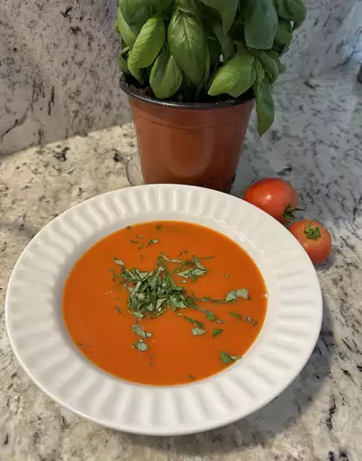

Fresh Tomato Soup

Simple Tomato Soup
This tomato soup recipe is simple, quick, and perfect to make when tomatoes are ripe in gardens and farmers' markets for a delicious summertime treat.
Ingredients
- 1 tablespoon unsalted butter or margarine
- 1 tablespoon olive oil
- 1 onion, thinly sliced
- 2 large garlic cloves, peeled and crushed
- 2 (28 ounce) cans whole peeled tomatoes
- 1 cup water
- 1 tablespoon sugar
- ¼ teaspoon celery seed
- ¼ teaspoon dried oregano
- 1 pinch red pepper flakes
- salt and ground black pepper to taste
Steps
- Make the meat sauce.
- Cook the noodles.
- Make the ricotta mixture.
- Layer the lasagna according to the recipe instructions.
- Cover with foil and bake.
- Let the lasagna rest before serving.